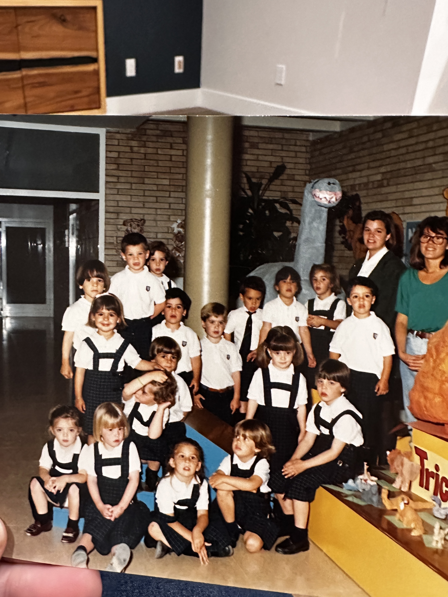
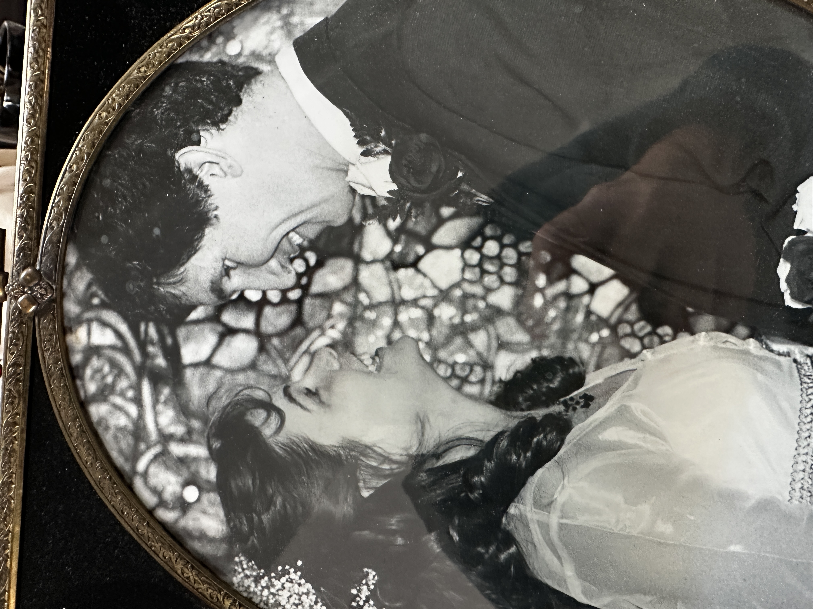

I taught in Spain for a year when I was 24. Then moved to San Francisco.

I started college at SJSU but soon met my husband and had kids right away, so stopped college for a bit. Life was a lot, so a gap was created in my work and education.
Onward to Adulting